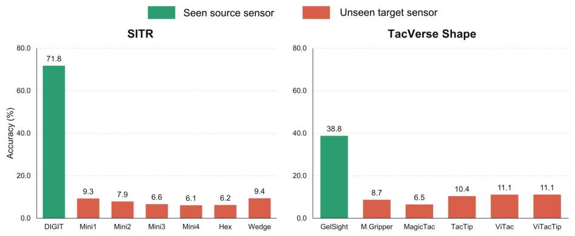
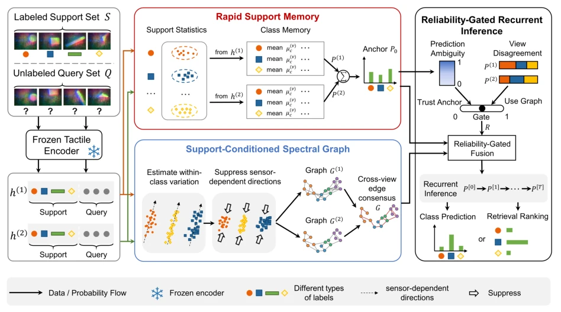
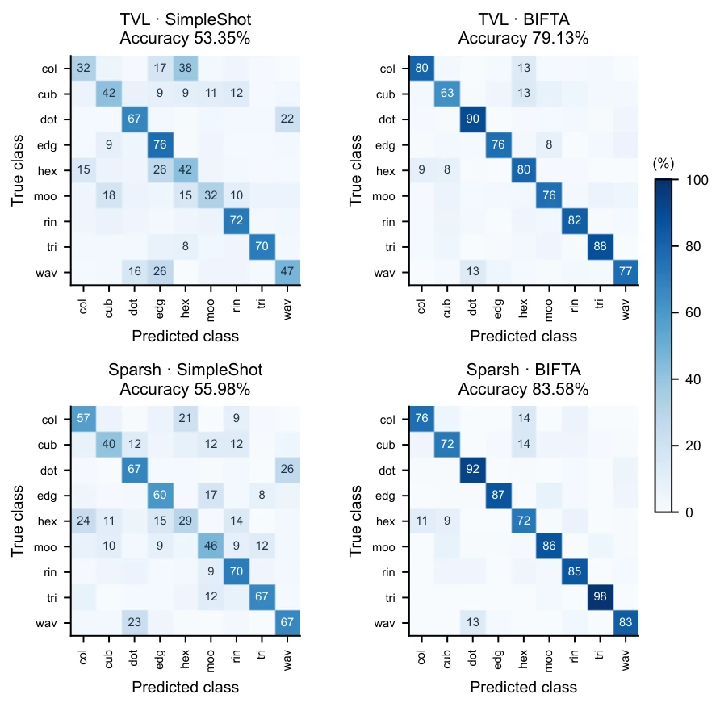

This paper delivers a "first aid kit" to the field of tactile perception. Facing the model's "maladaptation" caused by the diverse sensor hardware, the authors did not employ those clumsy methods requiring extensive fine-tuning, but instead mimicked the brain's "fast adaptation" mechanism to devise a Few-Shot scheme that requires no encoder parameter updates. BIFTA on the SITR dataset, using only 10% of label data, pulled accuracy from single digits to 87%, this achievement is indeed eye-catching, truly "turning stones into gold". However, this complex mechanism relying on spectral graph reconstruction and recursive propagation likely incurs significant computational overhead during inference, for robot operations with extremely high real-time requirements, isn't it a bit like "using a bull to kill a chicken"? Additionally, although the authors boast "no gradient updates", whether the tuning process of those hyperparameters (such as spectral exponent, gating weights) is truly as "foolproof" as claimed, still depends on the "metaphysics" during specific deployment? In short, the idea is very "sexy", but the computational cost bill and parameter tuning pain during deployment, we still have to put a question mark on it.
研究动机Motivation
触觉感知在具身智能中至关重要，但现实很骨感：不同传感器的光学设计、弹性体力学和成像几何差异巨大，导致在已知传感器上训练的模型（如TVL [Fu et al., 2024] 或 Sparsh [Higuera et al., 2025a]）一旦部署到未知硬件上，性能会瞬间崩塌，准确率甚至跌至随机猜测水平（Figure 1）。现有的跨传感器方法要么依赖大量目标数据微调，容易过拟合且破坏预训练特征；要么依赖关系学习，但在传感器偏移导致特征邻域结构扭曲时，图推理容易传播错误。虽然已有工作如SITR-Calib [Gupta et al., 2025] 或AnyTouch Match [Feng et al., 2025] 尝试解决，但它们往往需要特定的校准数据或成对观测，且难以处理类相关的特征畸变。如何在仅用极少标签（Few-Shot）的情况下，让冻结的预训练模型快速适应未知传感器，同时保持特征稳定性并修正几何结构，是亟待解决的核心痛点。
Tactile perception is crucial in embodied intelligence, but reality is very harsh: different sensors have huge differences in optical design, elastomechanics, and imaging geometry, causing models trained on known sensors (such as TVL [Fu et al., 2024] or Sparsh [Higuera et al., 2025a]) to collapse instantly in performance once deployed on unknown hardware, accuracy even dropping to random guessing levels (Figure 1). Existing cross-sensor methods either rely on extensive target data fine-tuning, prone to overfitting and destroying pre-trained features; or rely on relation learning, but when sensor offset distorts feature neighborhood structures, graph inference easily propagates errors. Although existing works like SITR-Calib [Gupta et al., 2025] or AnyTouch Match [Feng et al., 2025] attempt to solve this, they often require specific calibration data or paired observations, and struggle to handle class-related feature distortions. How to enable frozen pre-trained models to quickly adapt to unknown sensors with only a few labels (Few-Shot), while maintaining feature stability and correcting geometric structures, is a core pain point that needs urgent solving.

Figure 1: TVL performs well on the source sensor but collapses on unknown sensors. A linear classifier trained on the source sensor is evaluated with frozen TVL features and no target labels. Green bars denote seen source sensors and red bars denote unseen target sensors. Bars show mean accuracy over three seeds. On SITR, accuracy falls from 71.75% on DIGIT to 7.58% on average across six unknown sensors. On TacVerse Shape, it falls from 38.78% on GelSightNoMarker to 9.56% across five unknown sensors.
The BIFTA framework is inspired by the brain's fast sensory adaptation mechanism, the core lies in "frozen encoder + support set conditional inference", the overall process is divided into three key stages. First, construct "Rapid Support Memory": utilizing two complementary readout support set statistics (mean and covariance) extracted by the frozen encoder, fitting class memory through Shrinkage LDA, generating a stable Probability Anchor (P0), as initial evidence for inference, ensuring pre-trained knowledge is not lost. Second, implement "Support-Conditioned Spectral Graph": targeting high-variance feature directions caused by sensor offset, using support set to estimate within-class residual covariance, suppressing unstable directions through Spectral Transform, reconstructing the geometric neighborhood of query points, and fusing dual-readout graph structures, generating a more reliable affinity matrix (G). Finally, execute "Reliability-Gated Recurrent Inference": calculating prediction ambiguity and dual-readout inconsistency for each query point, generating a reliability-gated matrix (R), dynamically controlling the fusion strength of graph evidence. Through multi-round recursive updates, combining anchor evidence with graph propagation evidence, finally outputting classification probabilities or retrieval rankings. The entire process requires no gradient updates to the encoder, only dynamically adjusting inference geometry through support set statistics.

Figure 2: Information flow through BIFTA. A frozen encoder produces two readouts. Rapid support memory forms the probability anchor P0, while the support-conditioned spectral graph reshapes query geometry and constructs the cross-readout affinity matrix G. Prediction ambiguity and readout disagreement determine the query-wise reliability gate R. Anchored recurrent inference combines P0, G, and R to produce class probabilities or identity rankings.
The authors conducted extensive verification on three tactile datasets: SITR, TacVerse Shape, and TacQuad, using two frozen pre-trained backbone networks: TVL and Sparsh. Experiments set different label budgets such as 1%, 5%, 10%. Results show that BIFTA on SITR using only 10% labels improved Sparsh accuracy from 6.86% to 87.09%, surpassing the strongest baseline by 47.22 percentage points; the improvement on TacVerse Shape also reached 27.60 percentage points. In the TacQuad identity retrieval task, BIFTA's MRR metric was also significantly better than baselines like SimpleShot and LaplacianShot. Ablation studies show that dual-view memory, spectral geometric correction, and reliability gating are indispensable, among which removing spectral normalization leads to a significant performance drop, proving its key role in correcting sensor geometric structures. These results confirm the significant advantages of this method in data efficiency and cross-sensor generalization capabilities.

Figure 4: TacVerse class predictions with 10% support. Row-normalized confusion matrices compare SimpleShot and BIFTA on identical queries. Each matrix aggregates 13,500 predictions from five target sensors, three random seeds, and 900 queries per target.